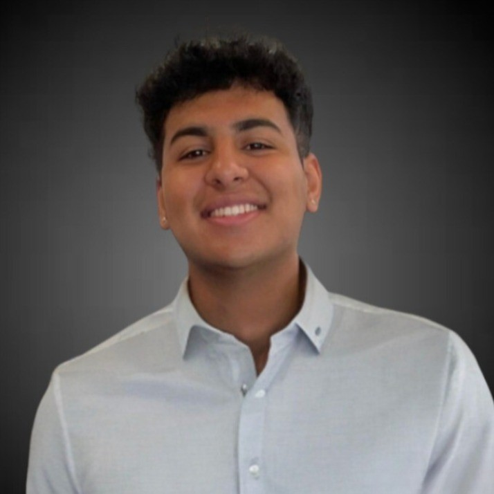

I’m a Data Science and Biology student at Northeastern University in Boston. My academic and professional journey centers around using data-driven approaches to improve healthcare outcomes, public health policy, and decision-making. I’m passionate about the intersection of data, medicine, and impact — exploring how analytics, technology, and research can drive smarter, more equitable systems.
